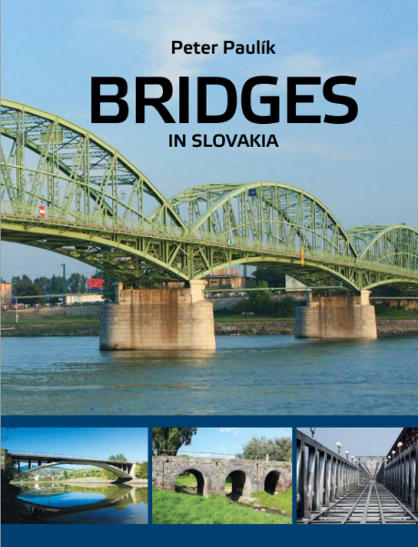

|  |
Bridges in Slovakia* |
Kniha v PDF |
Objednať |
 |
Mosty na území Slovenska* |
Kniha v PDF |
Objednať |
 |
Technológie výstavby betónových mostov |
Kniha v PDF |
Objednať |
| 
Technológie výstavby betónových mostov. Časť 2: Technológia letmej betonáže |
Kniha v PDF |
Objednať |
| *V prípade záujmu je možné si objednať tlačenú verziu kníh v cene 20 eur (Mosty na Slovensku a 1. diel Technológie výstavby BM)
prostredníctvom e-mailu proponti@proponti.sk.
Cena 2. dielu Technológie výstavby BM (letmá betonáž) je 25 eur (pre členov SKSI a študentov je zľava 30% po uvedení čísla pečiatky).
PDF 2. dielu Technológie výstavby BM (letmá betonáž) je zdarma pre študentov a členov SKSI. Stačí napísať na mail proponti@proponti.sk a preukázať štatút študenta alebo člena SKSI.
|